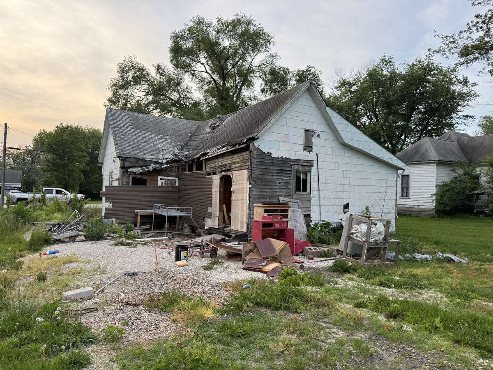

"Does insurance cover demolition?" is one of the most common questions I get after a fire, a storm, or a bad inspection. People are already dealing with a wrecked building, and the last thing they want is a surprise bill for tearing it down. The honest answer is: sometimes. It depends entirely on why the structure is coming down.
I'm Chris Kurtz, owner of Atlas Excavation & Demolition in Columbia, MO. We handle teardowns every week across Mid-Missouri, and a good share of them start with an insurance claim. This guide walks through when a policy pays for demolition, when it does not, and how to line your settlement up against a real teardown price. I'm a demolition contractor, not your agent, so treat this as a plain-English map and confirm the details with your own insurer.
Quick Answer: Does insurance cover demolition? If a covered peril like fire, wind, or a fallen tree destroyed the structure, your homeowners policy usually pays to demolish the damaged building and haul the debris, up to your limits. If you're tearing down a standing, undamaged structure by choice, insurance does not cover it and the cost is yours. Debris removal is often capped near 5 percent of dwelling coverage, and "ordinance or law" coverage can pay to tear down the undamaged portion when code requires it. Call Atlas at (573) 234-6641 for a free on-site walkthrough and a flat price.
In This Guide:
The Short Version: When Insurance Covers Demolition
Insurance is built to pay for sudden, accidental damage. That one idea answers almost every version of "does insurance cover demolition" that lands in my inbox. If the reason your building is coming down is a covered event, the odds are good your policy helps. If the reason is your own decision, the odds are near zero.
Here's the split I walk owners through on the first call:
- Covered loss (fire, windstorm, fallen tree, some water events). The policy generally pays to demolish the wrecked structure and remove the debris, subject to your limits.
- Planned teardown (rebuild, resale, lot clearing, tired old building). No coverage. This is an out-of-pocket project.
- Code-forced demolition after a partial loss. Covered only if you carry ordinance or law coverage. More on that below.
- Condemnation for neglect or age. Not covered. The owner pays.
The rest of this guide takes each of those in turn so you know which bucket your project falls into before you ever file a claim.
When Insurance Does Not Cover Demolition
Let's start with the case that surprises people most, because it's the one I see the most around Boone County. You have an old house, a sagging garage, or a mobile home that has outlived its usefulness. It's still standing. You just want it gone. You call your insurance company expecting help, and you get a no.
That no is correct, and it's not the insurer being difficult. A standard homeowners policy covers damage from specific perils. Wanting to tear down a functional building is not a peril. It's a choice. Choosing to demolish for a rebuild, to sell the cleared land, or because you're tired of maintaining the structure all fall outside coverage.
The same goes for gradual problems. A house that's been slowly rotting, a foundation that failed over 20 years, or a building that fell out of code because the code changed around it, none of that is a sudden accidental loss, so none of it triggers demolition coverage. For a planned teardown, your best move is to treat it as a normal project cost. Get a flat quote, compare it against your budget, and go from there. Our guide to demolition cost in Columbia, Missouri lays out real ranges so you can plan.
When Insurance Does Cover Demolition: After a Fire or Storm
Now the good news. If a covered peril destroyed the structure, demolition is usually part of what the policy makes right. A house gutted by fire, a barn flattened by a windstorm, a roof caved in by a fallen oak, these are exactly the losses homeowners coverage exists for. Removing what's left, including the teardown and haul-off, is normally folded into the claim.
How much you actually collect depends on three things:
- Your coverage limits. The dwelling limit caps the total the insurer will pay to repair, rebuild, or remove.
- Actual cash value versus replacement cost. Actual cash value pays what the structure was worth after depreciation. Replacement cost pays to rebuild new. This shapes how much is left for demolition after the rest of the claim is settled.
- Your debris removal sublimit. Covered separately, and often capped. See the next section.
The practical path is simple. File the claim, let the adjuster scope the loss, and get that scope in writing. Then bring in a demolition contractor to price the teardown against real numbers. That's where Atlas comes in. We'll walk a fire-damaged or storm-damaged site, give you a flat written price, and work straight off the adjuster's scope so you know whether the settlement covers the demolition or leaves a gap. For the Missouri Department of Commerce and Insurance's own guidance on handling a claim after a disaster, see the Missouri DCI consumer resources.
Debris Removal Coverage and Its Limits
Here's the piece that catches people off guard. Even when insurance covers the demolition, debris removal is usually treated as its own line with its own cap. On most homeowners policies that cap sits around 5 percent of your dwelling coverage.
On a small loss, that's plenty. On a full teardown of a larger home, hauling and disposal can run past the sublimit, and the overage lands on you. Concrete, foundation material, and mixed construction debris are heavy and expensive to dispose of, and a full house generates a lot of it. If you've had a total loss, ask your adjuster specifically what the debris removal limit is, in dollars, not just a percentage.
Some policies let you buy additional debris removal coverage, which is worth asking about if you own a larger or higher-value home. For a planned demolition with no covered loss behind it, none of this applies. Debris removal is just part of the job. Atlas quotes teardown and haul-off as one flat number, so you're comparing apples to apples against whatever the insurer agrees to pay. If you want to understand where the material actually goes, our post on demolition debris disposal in Columbia, MO covers it.
Ordinance or Law Coverage: The Piece Most People Miss
This is the coverage that saves people the most money after a major loss, and it's the one the fewest owners know they have (or don't have).
Picture a fire that destroys 60 percent of a house. Your basic policy pays to rebuild that damaged 60 percent. But the city looks at the remaining 40 percent and says it no longer meets current code, so the whole thing has to come down before you can rebuild. Who pays to demolish and rebuild that undamaged 40 percent?
Without ordinance or law coverage, you do. With it, the policy picks up the added demolition and reconstruction cost the code triggers. A lot of older homes in Columbia and the smaller Mid-Missouri towns were built under earlier codes, which makes this endorsement genuinely useful here. It's often a small add-on to the premium that prevents a large surprise bill after a serious loss. If you're reviewing your policy, ordinance or law coverage is the single line item I'd tell a homeowner to ask their agent about by name.
How Missouri Rules Shape Your Demolition Claim
Missouri has its own wrinkles worth knowing before you assume anything about a payout.
Under Missouri law, fire insurance policies issued or renewed in recent years let the insurer settle a loss at actual cash value, or repair, rebuild, or replace the property with materials of like kind and quality within a reasonable time. In plain terms, the insurer has some discretion in how it makes you whole, which is one more reason to get everything in writing and understand whether you're being paid actual cash value or replacement cost.
The state also backs you up as a consumer. The Missouri Department of Commerce and Insurance provides post-disaster support, answers coverage questions, and helps with disputes over supplemental claims. If your insurer and your adjuster's scope don't line up with what demolition actually costs, that's a resource worth using. And if a building has been condemned rather than damaged, remember that condemnation is a code and safety matter, not an insurance peril. The city can order a teardown, but your policy won't fund it. You may still need a demolition permit in Columbia, MO either way, which we handle as part of the job.
What This Means for Your Demolition in Columbia and Mid-Missouri
Putting it together for property owners here in Boone County and the surrounding area, a few practical points stand out.
Mid-Missouri gets real weather. Spring and summer storms, straight-line winds, and the occasional house fire drive a steady stream of insurance-related teardowns across Columbia, Ashland, Boonville, Fulton, and the rural stretches of Boone, Callaway, and Cooper counties. When those losses happen, the demolition side moves fastest when the contractor works directly off the adjuster's scope, and that's how we operate.
Our housing stock skews older in a lot of these towns, which is exactly why ordinance or law coverage matters locally, and why partial-loss demolitions here so often turn into full teardowns once code gets involved. And whether your teardown is insurance-driven or a planned project, the permitting, utility disconnects, and asbestos clearance are the same. Atlas handles all of it, gives you a flat written price, and leaves the lot graded and clean. If you're weighing a teardown against fixing the structure, our post on house demolition cost in Columbia, MO helps you run the numbers.
One thing to remember: your insurer decides what it covers, but you decide who does the work. You are not required to use a contractor the insurance company steers you toward. Get your own demolition quote so you know the real number and can hold the settlement up against it.
Dealing With an Insurance Teardown?
Atlas Excavation & Demolition works straight off your adjuster's scope and gives you a flat written price after a free on-site walkthrough. No guesswork, no phantom estimates from a satellite photo.
Get Your Instant Estimate Or Call (573) 234-6641Frequently Asked Questions
Does homeowners insurance cover demolition if I just want to tear down an old house?
No. A standard homeowners policy in Missouri does not cover a voluntary teardown. If the structure is standing and functional and you want it gone to rebuild, clear a lot, or sell the land, that demolition comes out of your pocket. Insurance responds to sudden, accidental, covered losses like fire, wind, or a fallen tree, not to a planned project. That is the single most common misunderstanding I hear from property owners around Columbia. If your teardown is a choice rather than the result of damage, budget for it as an out-of-pocket cost and get a flat written price before you start.
Will insurance pay to demolish my house after a fire in Missouri?
Usually yes, at least in part. If a fire, storm, or other covered peril destroys the structure, your policy typically pays to remove the damaged building and haul off the debris as part of the loss. How much depends on your coverage limits, your debris removal sublimit, and whether you carry actual cash value or replacement cost coverage. Missouri fire insurance policies let the insurer settle at actual cash value or repair and rebuild, so the exact payout varies. File the claim, get your adjuster's scope in writing, and then have a demolition contractor price the teardown so you know whether the settlement covers it.
What is ordinance or law coverage and why does it matter for demolition?
Ordinance or law coverage pays to demolish and remove the undamaged part of a building when local code forces you to tear it down before rebuilding. Say a fire wrecks 60 percent of a house and the city requires the rest to come down to meet current code. A basic policy might only pay for the damaged 60 percent. Ordinance or law coverage picks up the demolition and rebuild cost the code triggers. Many older Columbia homes were built under earlier codes, so this endorsement is worth asking your agent about. It is often a small add-on that saves a large bill after a major loss.
Does insurance cover debris removal after a demolition?
After a covered loss, yes, but with a cap. Most homeowners policies include debris removal, often limited to around 5 percent of your dwelling coverage. On a large teardown, hauling and disposal can run past that sublimit, and the overage falls to you. Some policies let you add extra debris removal coverage. For a planned demolition with no covered loss behind it, debris removal is simply part of the job cost, not an insurance item. Atlas quotes teardown and haul-off together as one flat price, so you can compare that number directly against whatever your insurer agrees to pay.
Who pays to tear down a condemned house in Missouri?
The property owner does. A condemnation order from the city does not trigger insurance coverage, because being run down or unsafe is not a sudden covered peril. If the owner does not act, the city can demolish the structure and place a lien on the property for the cost, which is usually more than hiring a contractor directly. If you own a condemned or unsafe building in Boone County, it is almost always cheaper to get your own demolition quote and handle it on your terms than to let the city do it and bill you.
Need Demolition Done in Columbia or Mid-Missouri?
Whether your teardown is riding on an insurance claim or it's a project you're paying for out of pocket, the right contractor matters. Atlas Excavation & Demolition handles residential, structural, and light commercial demolition across Columbia, Ashland, Boonville, Fulton, and the rest of Mid-Missouri. We answer the phone, work off your adjuster's scope when there is one, show up when we say, and leave the site clean.
- Phone: (573) 234-6641
- Email: hello@deployatlas.com
- Online: Instant estimate form
For related reading, see our full demolition cost guide for Columbia, Missouri, our breakdown of house demolition cost, our overview of demolition services in Columbia, MO, and our post on where demolition debris goes after we tear a structure down.